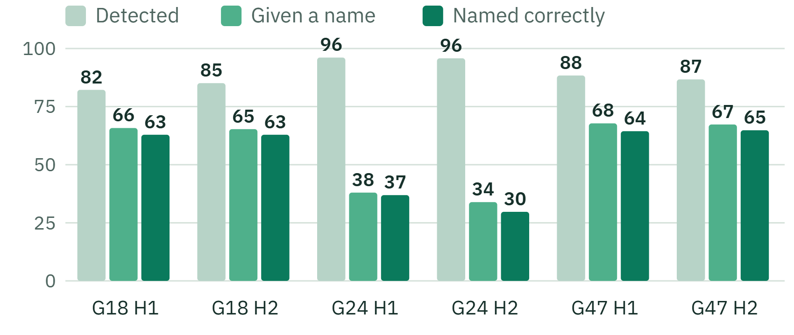

Backup · seeing players
89.7%
of visible player time is detected
97%
of detected players get the right team
97.1%
of tracked time is a single player
Share of visible player time, per unseen half
Models: YOLOv8x detector · kit-colour teams · CLIP identity model for names

Goalkeeper or not? (per tracklet)
Model: CLIP identity model, goalkeeper head. Precision 99.0%, recall 89.9%
true ↓ / called →
Called goalkeeper
Called outfield
Goalkeeper
(685)
616
89.9%
69
10.1%
Outfield
(12,925)
6
0.05%
12,919
100.0%
FOOTPASS held-out games 18, 24 and 47, 6 halves · goalkeeper matrix: 13,610 tracklets · PitchProfile · AAI3001
27